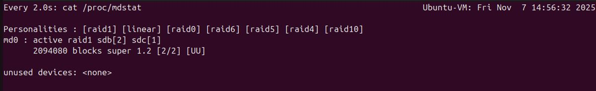

BTS · SISR
RAID 1 logiciel sous Linux
Créer un miroir, simuler une panne de disque et reconstruire la grappe sans perte de données.
- Ubuntu Server
- mdadm
- ext4
Contexte
Comprendre la redondance : le RAID 1 écrit les mêmes données sur deux disques, au prix de 50 % de capacité.
Résultat
Après la panne simulée, les données restent lisibles, la reconstruction ramène la grappe à l'état propre.
Étapes de réalisation
- Préparation. Deux disques virtuels de 2 Go et installation de mdadm.
- Création. mdadm --create en niveau 1 sur sdb et sdc.
- Montage. Formatage ext4 et montage, persistance via mdadm.conf.
- Panne. Disque marqué défaillant : grappe dégradée, fichier de test toujours accessible.
- Reconstruction. Retrait puis ajout du disque, resynchronisation, retour à clean.
Captures



Compétences
- Stockage
- Linux
- Diagnostic de panne